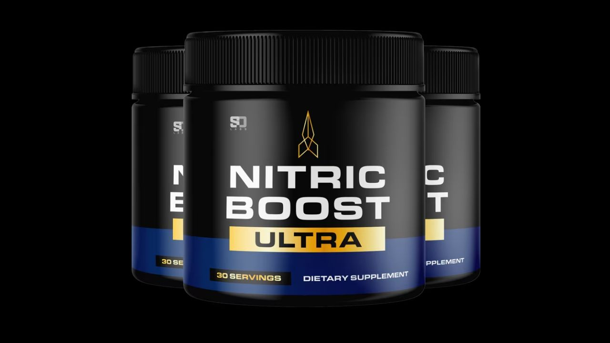

Nitric Boost Ultra targets endothelial dysfunction by increasing nitric oxide bioavailability through L-Citrulline, beetroot nitrates, and supporting cofactors.
▶ Watch the full Nitric Boost Ultra video review before deciding

Nitric Boost Ultra addresses vascular health at the mechanism level rather than just symptoms. L-Citrulline is converted to L-Arginine, increasing nitric oxide production, while beetroot powder provides dietary nitrates for sustained nitric oxide availability. This combination is well-supported by sports nutrition and cardiovascular research, making it effective for improving overall blood flow, which supports exercise performance, cardiovascular health, and sexual function.
Nitric Boost Ultra is a vascular health supplement built around two of the most extensively researched nitric oxide-boosting ingredients available: L-Citrulline and beetroot powder. It's designed to improve overall blood flow by increasing the body's natural production of nitric oxide, a signaling molecule that causes blood vessels to relax and widen.
Improved blood flow has wide-reaching effects throughout the body, supporting exercise performance, cardiovascular function, cognitive clarity, and sexual performance, all of which depend on adequate circulation to relevant tissue.
Endothelial dysfunction, a reduced capacity of blood vessel linings to produce nitric oxide efficiently, becomes increasingly common with age and is linked to numerous circulation-related complaints. Nitric Boost Ultra's formula addresses this through two complementary pathways: L-Citrulline supplementation, which research has shown to be more effective than direct L-Arginine supplementation at raising blood nitric oxide levels (due to better absorption and a longer-lasting effect), and beetroot powder, which provides dietary nitrates that the body converts directly into nitric oxide through a separate pathway.
Converted by the body into L-Arginine, the direct precursor for nitric oxide synthesis. Research has shown L-Citrulline supplementation raises blood nitric oxide markers more effectively than equivalent L-Arginine doses, due to superior absorption.
A concentrated source of dietary nitrates, which the body converts to nitric oxide through the nitrate-nitrite-nitric oxide pathway, separate from the L-Arginine pathway, providing complementary support.
Supports healthy circulation and has a long history of cardiovascular research, complementing the nitric oxide-focused ingredients.
"Noticed better pumps at the gym within the first couple weeks. Also feel like my energy and overall vitality has improved since starting."
"Was looking for something to help with overall circulation as I've gotten older. Hard to quantify exactly but I do feel better overall, more energy throughout the day."
L-Citrulline + Beetroot Powder · Made in USA
→ Visit Official Nitric Boost Ultra Website